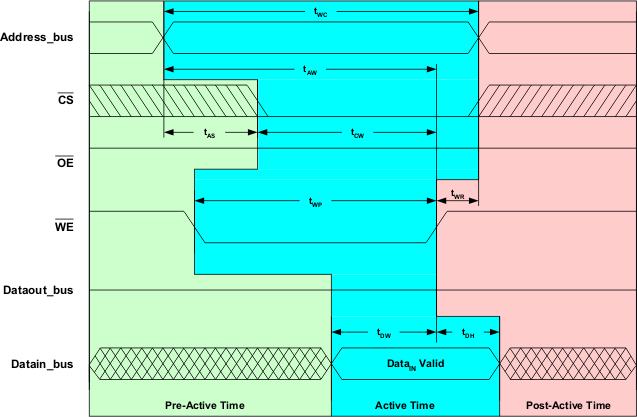
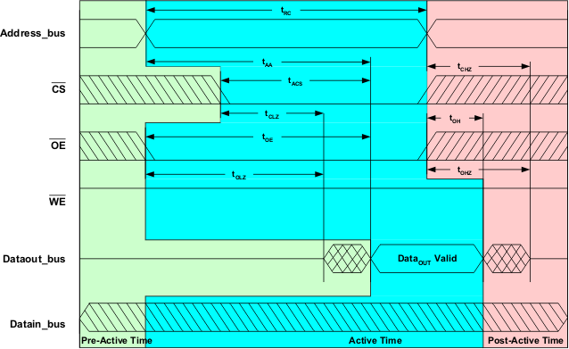
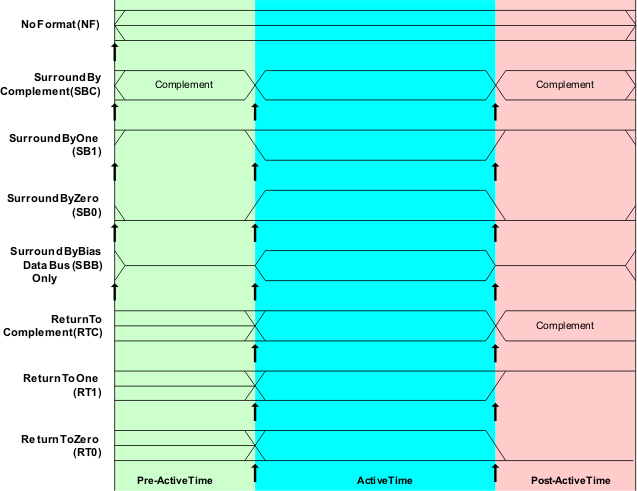
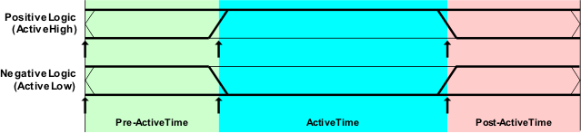

Practical usage of the timing system for memory testing
This section presents practical considerations in the way the timing setup is defined. Samples of a read and a write cycle for the example SRAM are shown in the figures below.


Notice the three shaded regions in each cycle. These represent the various activities in different sections of time in the cycles, Pre-Active, Active and Post-Active. The behavior in each section is different for each of the SRAM's busses; address bus, data bus and control bus. This is shown in the figure below.
The behavior of the address bus is the same as the data bus which is to provide information on each of the pins of the bus during a window of time in the cycle. These windows of time are considered the Active regions of the cycle. The bus's waveform either holds the same information through the entire cycle or the Active region is preceded and/or followed by regions in time where the information held on the bus is false. When the information on the bus changes between true and false during the cycle it uses a formatted waveform. Some of the commonly used waveforms are shown in the figure below. Note that the data bus during a read the test system channel usually applies a bias or precharge state to the pins of the bus. This case and the case where the information is held through the entire cycle are considered to use an unformatted waveform because they hold the same state on each pin of the bus for the entire cycle.

The naming convention SBC, SB1, etc. are industry used abbreviations to describe the formatted waveform. These represent only a few of the formatted waveforms that are possible on the V93000 test system. The naming convention used here does not extend easily to describe all of the possible formats. An alternative naming convention will be presented in a later section of this section.
In the figure above, the up arrows represent a required test system edge to perform a waveform action. Observe that the "Surround by" formats require three edges for the cycle and that the "Return To" formats only require two edges as they do not define an action at the beginning of the cycle. And of course the No Format waveform only requires one test system edge.
The behavior of the pins of the control bus is to activate one or more pins of the bus during specific windows of time during the cycle. Of course the windows of time are considered the active regions of the cycle for that pin. The typical behavior of a control pin is to either remain in the same logical state for the duration of the cycle or it pulses active then inactive again. The logical state for an active region is dependent on whether the control pin is active low or high. Many control pins use negative logic and are active low. The typical waveforms for control pins are shown in the figure below. The number of needed formats is not as numerous as the address and data busses.
